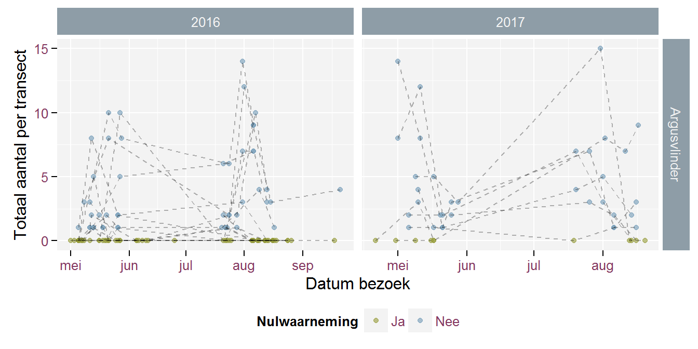

Evaluatie soortenmeetnetten 2017
Toon Westra
november 2017
1 Vlinders
1.1 Meetnetkarakteristieken
Tabel 1.1 en Tabel 1.2 geven een overzicht van de karakteristieken van de vlindermeetnetten (Maes et al.2015).
| Meetnet | Protocol | Type | Meetnetlocaties | Meetcyclus (jaar) | Start |
|---|---|---|---|---|---|
| Aardbeivlinder | Transecten | Integraal | 4 | 1 | 2017 |
| Argusvlinder | Transecten | Steekproef | 30 | 3 | 2016 |
| Bruin dikkopje | Transecten | Integraal | 4 | 1 | 2017 |
| Bruine eikenpage | Eitelling | Integraal | 13 | 1 | 2018 |
| Gentiaanblauwtje | Eitelling | Integraal | 7 | 1 | 2016 |
| Grote weerschijnvlinder | Gebiedstelling | Integraal | 9 | 1 | 2018 |
| Heivlinder | Transecten | Steekproef | 30 | 3 | 2016 |
| Klaverblauwtje | Transecten | Integraal | 1 | 1 | 2017 |
| Kommavlinder | Transecten | Integraal | 12 | 1 | 2016 |
| Oranje zandoogje | Transecten | Steekproef | 60 | 3 | 2017 |
| Veldparelmoervlinder | Transecten | Integraal | 12 | 1 | 2016 |
| Meetnet | Generatie | Bezoeken (/jaar) | Begin telperiode | Einde telperiode |
|---|---|---|---|---|
| Aardbeivlinder | 3 | 1/mei | 31/mei | |
| Argusvlinder | Generatie 1 | 3 | 1/mei | 31/mei |
| Generatie 2 | 3 | 20/jul | 20/aug | |
| Bruin dikkopje | Generatie 1 | 3 | 1/mei | 31/mei |
| Generatie 2 | 3 | 20/jul | 20/aug | |
| Bruine eikenpage | 1 | 1/dec | 30/mrt | |
| Gentiaanblauwtje | 1 | 1/aug | 31/aug | |
| Grote weerschijnvlinder | 3 | 1/jul | 30/jul | |
| Heivlinder | 3 | 20/jul | 20/aug | |
| Klaverblauwtje | Generatie 1 | 3 | 1/mei | 31/mei |
| Generatie 2 | 3 | 10/jul | 10/aug | |
| Kommavlinder | 3 | 1/aug | 31/aug | |
| Oranje zandoogje | 3 | 15/jul | 15/aug | |
| Veldparelmoervlinder | 3 | 1/mei | 31/mei |
1.2 Overzicht van de uitgevoerde tellingen
1.2.1 Aantal tellingen en taken
In bijlage wordt per meetnetloctie een overzicht gegeven van de uitgevoerde taken.
Tabel 1.3 geeft een overzicht per meetnet. In de tabel onderscheiden we het aantal bezochte locaties (dit zijn locaties waar minstens eenmaal werd geteld) en het aantal voldoende getelde locaties (dit zijn de locaties waar het aantal tellingen werd gehaald binnen de afgesproken telperiode.
Tabel 1.3 geeft ook de doelen die werden voorop gesteld voor 2016 en 2017.
| Meetnet | Jaar | Doel | Tellingen conform protocol | Bezochte locaties | Locaties voldoende geteld | Locaties voldoende geteld cyclus |
|---|---|---|---|---|---|---|
| Aardbeivlinder | 2017 | 4 Locaties | 8 | 2 | 2 | 2 |
| Argusvlinder | 2016 | 10 Locaties | 99 | 17 | 14 | 18 |
| 2017 | 10 Locaties | 45 | 9 | 6 | 18 | |
| Bruin dikkopje | 2017 | 3 Locaties | 14 | 3 | 2 | 2 |
| Bruine eikenpage | 2017 | 3 Locaties | 0 | 0 | 0 | 0 |
| Gentiaanblauwtje | 2016 | 7 Locaties | 16 | 6 | 6 | 6 |
| 2017 | 7 Locaties | 7 | 3 | 3 | 3 | |
| Heivlinder | 2016 | 10 Locaties | 66 | 21 | 17 | 19 |
| 2017 | 10 Locaties | 14 | 5 | 3 | 19 | |
| Klaverblauwtje | 2017 | 1 Locaties | 6 | 1 | 1 | 1 |
| Kommavlinder | 2016 | 10 Locaties | 29 | 10 | 9 | 9 |
| 2017 | 10 Locaties | 32 | 10 | 7 | 7 | |
| Oranje zandoogje | 2017 | 15 Locaties | 36 | 15 | 8 | 8 |
| Veldparelmoervlinder | 2016 | 10 Locaties | 31 | 9 | 9 | 9 |
| 2017 | 10 Locaties | 19 | 7 | 4 | 4 |
1.2.2 Tijdstippen van de tellingen
Figuur 1.1 geeft een overzicht van de tijdstippen van de bezoeken.
Figuur 1.1: Overzicht tijdstippen waarop tellingen werden uitgevoerd in 2017
1.2.3 Afwijkingen van het protocol
De volgende tabel geeft een overzicht van de afwijkingen van het protocol.
| meetnet | datum | locatie | bezoek status | notes |
|---|---|---|---|---|
| Aardbeivlinder | 2017-05-24 | Houthulstbos | TellingGVM | Drie metingen al gebeurd op 5, 10 en 16 mei. |
| Argusvlinder | 2017-06-24 | Dodengang | TellingGVM | Geen telling in deze periode kunnen doen, zoals gemeld omwille van verblijf buitenland. Er zijn 3 tellingen geweest en wordt in zomer 3x herhaald. |
| Bruin dikkopje | 2017-09-21 | Zutendaal | TellingNVCP | 3 de telling na 20 augustus |
1.2.4 Aantallen
1.2.4.1 Aantal getelde secties per transect
Voor de vlinders die via transecten worden opgevolgd verkennen we eerst het aantal 50 meter-secties per transect en het aantal tellingen per sectie. In figuur 1.2 en figuur 1.3 stelt elke rij een transect voor. Elk hok geeft een sectie weer van ongeveer 50 meter. De kleur geeft aan of een sectie al dan niet voldoende werd geteld. De transecten zijn maximaal 1 kilometer lang, maar voor kleine populaties zijn enkel korte transecten haalbaar.
Figuur 1.2: Aantal tellingen per sectie en per jaar voor de verschillende vlindertransecten - Veldparelmoervlinder, Argusvlinder, Heivlinder, Kommavlinder
Figuur 1.3: Aantal getelde secties voor de verschillende vlindertransecten - Aardbeivlinder, Klaverblauwtje, Bruin dikkopje en Oranje zandoogje
1.2.4.2 Overzicht totale aantallen per bezoek
Onderstaande figuren tonen de verdeling van de getelde aantallen per bezoek. Voor de transecttellingen gaat het over het totaal getelde aantal per bezoek over alle secties van het transect. Voor de eitetellingen gaat het over het totaal getelde aantal per proefvlak.
Figuur 1.4: Verdeling van totaal getelde aantallen per bezoek - Veldparelmoervlinder
Figuur 1.4: Verdeling van totaal getelde aantallen per bezoek - Argusvlinder
Figuur 1.4: Verdeling van totaal getelde aantallen per bezoek - Heivlinder
Figuur 1.4: Verdeling van totaal getelde aantallen per bezoek - Kommavlinder
Figuur 1.4: Verdeling van totaal getelde aantallen per bezoek - Gentiaanblauwtje
Figuur 1.5: Verdeling van totaal getelde aantallen per bezoek - Aardbeivlinder, Klaverblauwtje, Bruin dikkopje en Oranje zandoogje
Onderstaande figuren geven de evolutie van de getelde aantallen binnen het seizoen. De stippelijnen verbinden tellingen van eenzelfde locatie. De blauwe lijn toont de gemiddelde evolutie binnen het seizoen, waarbij de grijze banden aan beide kanten van de blauwe lijn de onzekerheid aangeven op deze gemiddelde evolutie.

Figuur 1.6: Evloutie totaal getelde aantallen per bezoek waarbij bezoeken aan eenzelfde locatie met stippellijn worden verbonden - Aardbeivlinder, Klaverblauwtje, Bruin dikkopje en Oranje zandoogje

(#fig:figuurAantallenEvVlinders2017_2)Evloutie totaal getelde aantallen per bezoek en globale evolutie - Aardbeivlinder, Klaverblauwtje, Bruin dikkopje en Oranje zandoogje